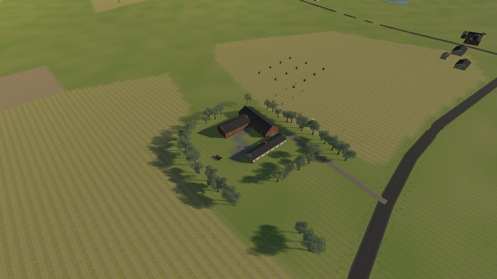

01 / Platsen
Vallarum som grund
Vägar, byggnader och terräng bygger på geografiska data. Gårdens detaljer och spelhändelser är tolkningar.
Ett skånskt överlevnadsäventyr
Sista skörden
Du är Börje. Bonde, envis och illa förberedd på att skörden har börjat skjuta tillbaka. Rädda gården med högrep, bössa och en rejäl dos skånsk envishet.
Hämta för Windows ↓
01 / Platsen
Vägar, byggnader och terräng bygger på geografiska data. Gårdens detaljer och spelhändelser är tolkningar.
02 / Skörden
Fågelskrämmor, plåttuppar och sägenväktare. Fyra bondvapen och sparpunkter mellan uppdragen.
03 / Nytt i 0.2.2
Minikarta, tydligare terrängkarta, svenska skyltfärger och växling mellan fullskärm och fönster.
En tidig spelbar version. Automatiska tester är genomförda; spelet är fortfarande under utveckling.